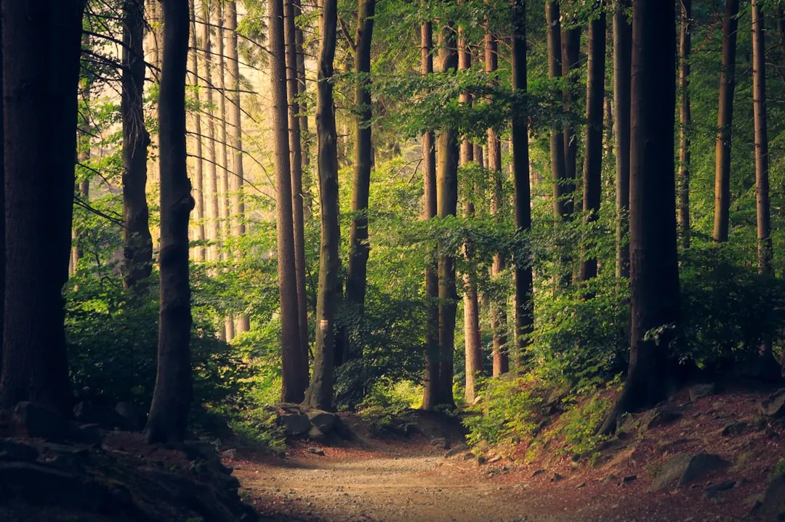

Sequoia & Kings Canyon: Hiking the Giant Trees
· By GoldenPath Guide Editorial Team
Stand in the middle of the forest here and every sense is overwhelmed. Sequoia and Kings Canyon national parks hold some of the most majestic scenery not only in California but in the world — the 14,494-foot Mount Whitney, the highest peak in the lower 48, and the General Sherman Tree, the largest tree on Earth by volume, both stand guard over this land.
Up close they’re hard to believe, and even just looking at them is thrilling — the great reddish trunks hold the cool of the night well into the day, and the air goes so quiet that your own breathing sounds large.
The General Sherman Tree & the Giant Forest
The two parks sit side by side and are usually visited together. The single best moment is standing before the General Sherman Tree in the Giant Forest — 275 feet tall with a 36-foot base diameter. A short, easy paved trail lets anyone get there — the soft, settled thump of a needle-carpeted floor beneath your steps — which is why the tree fills a photo even from far away.
The Giant Forest concentrates the sequoias in one dense grove, and a loop trail takes you through the center of them. In winter the snow-dusted sequoias feel hushed and sacred; in summer they cast a cool shade. Don’t miss Tunnel Rock, a fallen tree that drivers pass straight through — park and step out for a photo that puts nature’s scale in plain perspective.
Kings Canyon, the Granite Canyons
Cross into Kings Canyon for deep, gash-like gorges and sheer granite cliffs. The canyon shows the Sierra Nevada’s rugged beauty, and the sound of waterfalls created by ancient rockfalls echoes off the walls. In summer, the Cedar Grove area trail along the canyon floor — walking forest and valley together — is a favorite.
Planning Your Visit
Mountain roads are winding and slow, so map your route. Common approaches come from Fresno via the Big Trees monument, or from Los Angeles/Fresno into Two Rivers and Kings Canyon. A park shuttle also runs as public transport, so check its seasonal status before you go.
Lodging inside the parks is half the experience. Camp for the crackling fire and starry sky in fresh mountain air, or pick a lodge for the warmth of an old wooden building. Families should aim for short, half-day trails, while hikers can tackle ambitious routes from the Mount Whitney trailhead.
Under the ancient trees, a strange stillness settles in, as if time itself had paused. To make that encounter last, here is how the parks keep the path open. And for most people the size of these trees never quite settles — the way a very high ceiling makes a room feel, but on a scale with no roof at all.
Shuttles, Chains and Entrance Fees
The parks charge $35 per vehicle for a seven-day pass, valid at both Sequoia and Kings Canyon; the $80 annual America the Beautiful pass breaks even on the third federal-land visit of the year. From late May through early September, the free Giant Forest shuttle loops the main groves every 10 to 15 minutes — park at the Museum and ride, since grove lots fill by 10 a.m. Generals Highway between the parks closes to through traffic with winter snow, typically December through March; tire chains or cables are required on the road dozens of days per winter, and rental contracts often restrict chain use, so winter visitors should confirm vehicle policy before booking. Summer afternoon thunderstorms build over the high country — summit drives and exposed trails belong in the morning. Gas is unavailable inside the parks; fill at Three Rivers (south entrance) or the Hume Lake area (north).
Grant Grove, Moro Rock and Crystal Cave
Kings Canyon's Grant Grove centers on the General Grant Tree, the world's second-largest by volume — the half-mile paved loop takes 30 minutes and stays accessible to wheelchairs and strollers. Sequoia's Moro Rock climbs 350 granite steps to a 6,725-foot summit view; the quarter-mile ascent takes fit hikers 30 to 45 minutes round-trip, and the parking lot fills by 9:30 a.m. in summer. Crystal Cave, a marble cavern 15 minutes off the Generals Highway, runs 50-minute guided tours at about $20 for adults from late May through September — tickets sell out by midday, so book online the week before. The Congress Trail's two-mile loop past the General Sherman Tree and the House-sized clusters takes 90 minutes at photo pace. Winter visitors strap on the rented snowshoes ($15 to $20 in Three Rivers) for the marked grove trails. Skip the 45-minute Tunnel Log line at midday — drive through before 9 a.m. or after 4 p.m.
Lodging: Inside Versus Outside the Parks
Wuksachi Lodge inside Sequoia charges $250 to $350 a night in summer with the location premium — Giant Forest trailheads start outside the door, and the restaurant serves the only dinner for miles ($25 to $40 per person). Grant Grove Cabins run $150 to $250 with basic historic rooms near the big trees. Outside the south entrance, Three Rivers motels and riverside cabins run $130 to $200 with kitchenettes that cut food costs; the drive to the Giant Forest takes 45 to 60 minutes up the winding highway. Visalia, an hour out, holds chain hotels near $110 to $140 for budget trips. In-park lodging books out 6 to 12 months ahead for June through August — reserve the day the window opens. Campgrounds ($20 to $35 a night) release six months ahead and vanish within hours for summer weekends; September midweek sites stay bookable two to three weeks out with thinner crowds and golden light.
All Destinations
Redwood National & State Parks
Yosemite National Park Guide